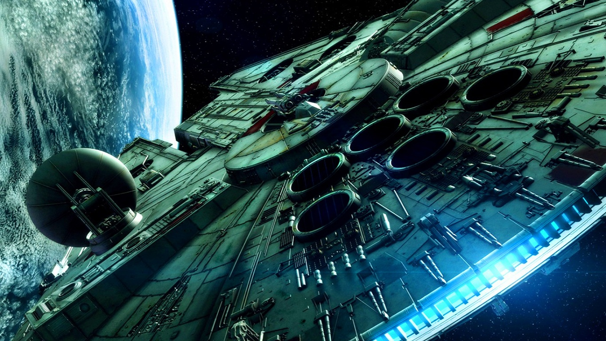

STAR WARS (SAGA)

La amenaza fantasma
Episodio I - La amenaza fantasma) es una película de ópera espacialn. 2 de 1999, escrita y dirigida por el director de cine estadounidense George Lucas. Es la cuarta entrega de la saga Star Wars y la primera en el orden cronológico de la misma, después de un paréntesis de veintidós años del lanzamiento de Una nueva esperanza. La trama describe la historia del maestro jedi Qui-Gon Jinn y de su aprendiz Obi-Wan Kenobi, que escoltan y protegen a la Reina Amidala desde su planeta Naboo hasta Coruscant con la esperanza de encontrar una salida pacífica a un conflicto comercial interplanetario a gran escala. También trata del joven Anakin Skywalker antes de convertirse en Jedi, presentado como un esclavo con un potencial de la Fuerza inusualmente fuerte, y debe lidiar con el misterioso regreso de los Sith. Lucas comenzó la producción de la película después de llegar a la conclusión de que la tecnología de los efectos especiales había avanzado lo suficiente para hacer la cuarta entrega de la saga. El rodaje comenzó el 26 de junio de 1997 en diferentes lugares, entre ellos Leavesden Film Studios y la estepa tunecina. Los efectos especiales incluyen un gran número de escenas generadas por ordenador (CGI); algunos de sus personajes y paisajes son creados en su totalidad por esta tecnología. La película fue estrenada en los cines el 19 de mayo de 1999, dieciséis años después de la anterior entrega, El Retorno del Jedi, en 1983. Su estreno fue muy aclamado y recibió una amplia cobertura tanto en los medios de comunicación como por el gran número de seguidores que lo habían esperado durante todos estos años. A pesar de las críticas recibidas, es una de las películas más taquilleras de la historia del cine, al recaudar en todo el mundo 924 317 558 USD. El 10 de febrero de 2012 se reestrenó en versión 3D, que le permitió conseguir un adicional de más de un millardo de dólares en taquilla.
Argumento
En una galaxia muy, muy lejana ... La República Galáctica está sumida en el caos. Los impuestos de las rutas comerciales a los sistemas estelares exteriores están en disputa ... Esperando resolver el asunto con un bloqueo de poderosas naves de guerra, la codiciosa Federación de Comercio ha detenido todos los envíos al pequeño planeta de Naboo ... Mientras el Congreso de la República debate interminablemente esta alarmante cadena de acontecimientos, el Canciller Supremo ha enviado en secreto a dos Caballeros Jedi, guardianes de la paz y la justicia en la galaxia, para resolver el conflicto...
El ataque de los clones
El ataque de los clones o La guerra de las galaxias: Episodio II - El ataque de los clones) es una película de space operaNota 1 dirigida por el cineasta estadounidense George Lucas y escrita por él mismo y Jonathan Hales. Fue la quinta película estrenada de la saga Star Wars y la segunda en términos de cronología interna. El reparto principal estuvo formado por Ewan McGregor, Hayden Christensen, Natalie Portman, Samuel L. Jackson, Christopher Lee, Ian McDiarmid, Temuera Morrison, Frank Oz, Anthony Daniels y Kenny Baker. El rodaje comenzó a mediados de 2000, en los estudios de 20th Century Fox en Australia, para luego trasladarse a exteriores como el Palacio Real de Caserta y los jardines del lago de Como, ambos en Italia, el desierto de Túnez y la ciudad de Sevilla (España). Fue la primera película que se rodó por completo con cámara digital de alta definición (24 fotogramas por segundo).2 Los efectos especiales corrieron a cargo de Industrial Light & Magic, empresa fundada por Lucas durante la producción de la primera entrega de la saga, A New Hope. La trama se desarrolla diez años después de los sucesos ocurridos en la película anterior, The Phantom Menace. Después la Batalla de Naboo, la galaxia se encuentra al borde de una guerra civil. Bajo la dirección de un Jedi renegado que se hace llamar Conde Dooku, muchos sistemas solares amenazan con la secesión de la República Galáctica. Tras los intentos de asesinato de la senadora Padmé Amidala, la anterior reina de Naboo, el Padawan Anakin Skywalker es asignado para protegerla, mientras que a su maestro, Obi-Wan Kenobi, se le asigna la investigación del intento de asesinato. Fue estrenada el 16 de mayo de 2002 en Estados Unidos, recibiendo comentarios variados por parte de la crítica cinematográfica. Con un presupuesto de $115.000.000, logró recaudar $649.398.328 en las taquillas de todo el mundo, situándose como la cuarta película de la saga con mayor recaudación.
ArgumentoDespués de que un cazarrecompensas intentara asesinar a la senadora Padmé Amidala, el Consejo Jedi le encarga al Padawan Anakin Skywalker la misión de proteger a la senadora, mientras que su maestro, Obi-Wan Kenobi, trata de descubrir la identidad del cazarrecompensas. Anakin y Padmé parten del planeta Coruscant hacia Naboo, planeta de origen de la senadora. Allí, Anakin revela a Padmé lo que siente por ella y a la vez se entera de que es correspondido. Pero ambos deciden reprimir sus sentimientos, debido a que a los Jedis no se les permite enamorarse. Durante su estancia en Naboo, Anakin tiene pesadillas en las que ve sufrir a su madre, Shmi Skywalker, y, junto con Padmé, decide viajar a Tatooine. Allí se reúnen con la nueva familia de Shmi, los Lars, que le cuentan a Anakin apenados cómo su madre había sido secuestrada hacía ya un mes por los Tusken, los moradores de las arenas. Anakin parte solo en su búsqueda y encuentra a su madre prisionera en un campamento de los Tusken; no obstante, tras unas pocas palabras, Shmi muere y Anakin, furioso, asesina despiadadamente a toda la tribu Tusken. Entonces lleva el cuerpo de su madre a la granja de los Lars, donde la entierran. Mientras tanto, las investigaciones de Obi-Wan le llevan al planeta Kamino, donde descubre que los kaminoanos están preparando un ejército de clones para servir a la República por encargo de un Maestro Jedi que había sido asesinado años atrás. Además, allí se encuentra al cazarrecompensas que había intentado asesinar a Padmé, Jango Fett, y al cual los kaminoanos están usando para crear los clones. Fett consigue escapar, pero Obi-Wan le sigue hasta el planeta Geonosis, donde descubre que se encuentran los Separatistas liderados por el Conde Dooku, discípulo del Lord Sith Darth Sidious. Obi-Wan trata de mandar un mensaje al Consejo Jedi para informarles, pero debido a un fallo en su transmisor, se lo envía a Anakin que se encuentra a menor distancia, para que él lo reenvíe. Obi-Wan acaba siendo apresado mientras lo grababa, por lo que Anakin y Padmé también van en su ayuda tras reenviar el mensaje. Ambos caen también prisioneros, pero numerosos Jedis llegan a Geonosis para rescatarlos. No obstante, la mayoría de los jedis son neutralizados por el ejército droide de los Separatistas y cuando todo parecía perdido, el maestro Yoda aparece con miles de clones traídos de Kamino. Se desata entonces la batalla de Geonosis, la primera librada entre la República y los Separatistas, y la que daría inicio a las Guerras Clon. En el fragor de la batalla, el Conde Dooku huye, perseguido por Anakin y Obi-Wan. Dooku derrota fácilmente a Obi-Wan y a Anakin, al cual le amputa el antebrazo derecho; no obstante, antes de que les derrotara, el maestro Yoda acude en su ayuda e inicia un duelo con Dooku, que acaba huyendo. Poco después, Anakin, ahora con un brazo mecánico, se casa en secreto con Padmé en los lagos de Naboo.

La venganza de los sith

La venganza de los sith o La guerra de las galaxias: Episodio III - La venganza de los sith) es una película de space opera estadounidense, escrita y dirigida por George Lucas. Fue la sexta película estrenada de la saga de Star Wars, siendo la tercera en términos de cronología interna. La trama describe una época en la que los Caballeros Jedi se han esparcido por toda la galaxia, dirigiendo un ejército clon masivo para enfrentar a los Separatistas Galácticos, tres años después del inicio de las Guerras Clon. El Canciller Palpatine fue secuestrado y el Maestro Jedi Obi-Wan Kenobi, acompañado de su aprendiz Anakin Skywalker, es enviado a rescatarlo en una misión, donde también debe eliminar a los Líderes Separatistas Conde Dooku y General Grievous, para concluir el conflicto galáctico. Después de ser rescatado, el Canciller fortalece su amistad con Anakin, para poder convencerlo de que existen mayores beneficios en el Lado Oscuro de la Fuerza, que del Lado Luminoso de la misma. La Orden Jedi empieza a sospechar de la amistad entre el Canciller y Anakin, por lo que intenta averiguar los verdaderos objetivos de Palpatine. Cuando el Canciller se descubre, repentinamente, como el siniestro Lord Sith Darth Sidious, los destinos de la Orden Jedi y de la República Galáctica se encuentran expuestos ante un inminente peligro. Estrenada en 2005, la película obtuvo unos 850 millones de dólares a escala mundial, lo que la convirtió en la segunda adaptación con mayores ganancias de la saga. También fue la única película de Star Wars en recibir clasificación PG-13, debido a "sus elementos oscuros, emocionales y trágicos", de acuerdo a las declaraciones de Lucas.
ArgumentoLas Guerras Clon continúa, y el Canciller Palpatine (Ian McDiarmid) ha sido secuestrado por el Líder Separatista de la Confederación de Sistemas Independientes, el General Grievous (Matthew Wood). Los Jedi Obi-Wan Kenobi (Ewan McGregor), y Anakin Skywalker (Hayden Christensen), encabezan una misión para rescatar al Canciller y detener a Grievous. Después de abordar la nave "La Mano Invisible" y localizar al Canciller Palpatine, los Jedi tiene un encuentro con el Conde Dooku, en el cual Obi Wan es puesto fuera de combate. Anakin, por otro lado, siendo provocado todo el tiempo por Dooku, reduce al Sith amputándole ambas manos. Es aquí donde Anakin, dejándose llevar por su odio al Sith que le corto el brazo y comenzó las Guerras Clon, más las insistencias de Palpatine para eliminar al Separatista, decapita al Conde. Aunque se siente culpable por actuar ajeno al Código de la Orden Jedi, el Canciller lo tranquiliza diciéndole que cumplió su deber y que Dooku era "muy peligroso para mantenerlo con vida". Así pues, rescatan a Obi-Wan inconsciente y deciden abandonar la nave. Sin embargo, son capturados por Grievous. Una vez frente al general, Obi-Wan y Anakin logran liberarse e intentan arrestar a Grievous, pero éste logra escapar del ataque, ocasionando que la misión falle en uno de sus primordiales objetivos. Aterrizando lo que queda de "La Mano Invisible" en el planeta Coruscant, los Jedis logran rescatar al Canciller. Palpatine nombra a Anakin como su representante directo ante el Alto Consejo Jedi, una decisión que causa malestares y desacuerdos con la Orden Jedi, al considerarla como una intromisión de Palpatine y la política en las decisiones del Alto Consejo. Por otra parte, Anakin se entera de que su esposa Padmé Amidala (Natalie Portman) está embarazada. Visiblemente contentos por esta noticia, ambos comienzan a hacer planes para criar a su hijo en el planeta Naboo. Esa misma noche, él comienza a ser perturbado por numerosas pesadillas, en las que tiene visiones de Padmé muriendo en el parto, similares a las que tenía de su madre, poco antes de que ella muriera. Al día siguiente, Obi-Wan le cuenta discretamente a Anakin que el Alto Consejo le ha asignado la tarea de espiar al Canciller, debido a la sospecha por su presunta corrupción en el Senado Galáctico con el fin de evitar ser relegado de su cargo político y sus facultades adquiridas durante las Guerras Clon. No obstante, el joven Jedi no está completamente seguro si debería asumir esa orden, puesto que el canciller se ha convertido en su "amigo y consejero". A partir de su nombramiento como representante de la cancillería ante la Orden Jedi, Anakin ha comenzado a desarrollar una profunda amistad con Palpatine. Además, éste ha intentado convencerlo sutilmente, en todas y cada una de sus conversaciones, sobre los privilegios exclusivos con los que cuenta el Lado Oscuro de la Fuerza. Uno de ellos es el aprendizaje de una habilidad oscura para prevenir la muerte de cualquier persona, algo que según Palpatine, sólo pudo conseguir el Lord Tenebroso de los Sith Darth Plagueis el Sabio. Esto ocasiona el interés de Anakin, puesto que sabe que sus pesadillas podrían volverse realidad y, por lo tanto, teme que Padmé se encuentre en riesgo de morir. En esos momentos, Obi-Wan viaja a Utapau para capturar al General Grievous. La Orden Jedi confía en que, con la detención del último Líder Separatista, la guerra terminará con la victoria de la República Galáctica. Mientras tanto, en Coruscant, Anakin logra percatarse de que Palpatine conoce demasiados detalles acerca del Lado Oscuro de La Fuerza, por lo que comienza a desconfiar de él. Entonces el Canciller se revela, sorpresivamente, como Darth Sidious, el Señor Oscuro de los Sith. Desconcertado, Anakin acude al Alto Consejo para notificarle de la verdadera identidad del Canciller, aunque el Maestro Jedi Mace Windu (Samuel L. Jackson) no confía en la veracidad de sus palabras pero le garantiza a Anakin su confianza de ser realidad su descubrimiento. Finalmente, intrigado por las declaraciones del confundido joven Jedi, Windu decide acudir a la oficina de Palpatine, junto a otros tres Maestros de la Orden entre ellos Kit Fisto, para asegurarse de ello y, por consiguiente, encarcelar a Palpatine por el delito de traición a la República. Sin embargo, el Canciller comienza un duelo de sables de luz contra ellos, logrando asesinar a los acompañantes de Windu. A su llegada a la oficina de éste, Anakin encuentra a Palpatine —descubierto físicamente, en su verdadera identidad, como Darth Sidious— herido y desarmado por Windu, quien pretende asesinarlo. Indubitado sobre la traición de la Orden Jedi a la República Galáctica, mencionada por Sidious a partir del hecho de que "los Jedi no deben asesinar ni oprimir a sus rivales", Anakin desarma a Windu cortándole la mano con la que sostenía su sable de Luz. Desprotegido frente a Sidious, Windu es asesinado por los ataques de rayos producidos por el Sith Oscuro. Después de asesinar a Windu, Sidious elige a Anakin como su nuevo aprendiz, dándole el nombre de Darth Vader. Anakin —ahora descubierto, en su nueva identidad, como un nuevo Sith— jura lealtad a su nuevo maestro, y comienza a ejecutar sus órdenes con el uso del Lado Oscuro de la Fuerza. Su primera misión, como aprendiz de Sidious, es acudir al Templo Jedi para asesinar a todos los niños y demás aprendices de la Orden Jedi. A su vez, Sidious da órdenes precisas a los clones activos en la galaxia, para eliminar a sus respectivos Generales Jedi, mediante la promulgación de una directiva programada bajo la Orden Secreta Número 66. Con dicha resolución, la mayoría de los Maestros Jedi son asesinados por sus propias tropas de combate. Únicamente los Jedi Yoda (Frank Oz) y Obi-Wan logran sobrevivir, a lo que pasaría a ser definido como la Purga Jedi, y ponerse a salvo con la ayuda del Senador Bail Organa (Jimmy Smits). Mientras tanto Darth Vader, tras asesinar a todos los niños y jóvenes aprendices, acude con Padmé —en su anterior identidad como Anakin— y le revela que la Orden Jedi ha intentado apoderarse de la República y traicionar al senado. Después acude al planeta Mustafar para cumplir con su siguiente misión, cuyo objetivo es asesinar a los Líderes Separatistas de la Confederación de Sistemas Independientes. En el Senado Galáctico, Sidious —fingiendo como el canciller Palpatine— informa a los Senadores del presunto complot organizado por la Orden Jedi para derrotar a la República y apoderarse de la galaxia. Como solución, plantea la reorganización de la misma en un nuevo sistema político, el Imperio Galáctico. La medida correctiva es aprobada por todos los Senadores presentes en ese momento, poniendo fin a la República Galáctica. Al llegar al Templo Jedi, Obi-Wan y Yoda se encuentran con los cadáveres de los aprendices asesinados, con heridas producidas por sable de luz, —el sable de luz es un arma exclusiva de la Orden Jedi / Sith—. Para conocer la identidad del asesino, Obi-Wan consulta las grabaciones de seguridad del edificio, enterándose de que Anakin fue el único responsable de la masacre. Sorprendido e inquietado, Obi-Wan le menciona a Yoda que le resultará muy difícil enfrentarse a Anakin, pues ha sido como "un hermano para él". Antes de abandonar el Templo Jedi, ambos envían una señal para advertir a cualquier otro Jedi acerca del peligro existente en la galaxia. Tras esto, Obi-Wan se reúne con Padmé para informarle sobre la conversión de Anakin al Lado Oscuro de la fuerza. Padmé rehúsa creer en sus palabras y parte a Mustafar para encontrarse con su esposo, antes de esto, Obi-Wan usando sus instintos Jedi, descubre que ella está embarazada, y que Anakin es el padre. El Canciller Palpatine ordena a su nuevo aliado "Lord Vader" que vaya al planeta minero de los volcanes Mustafar, para traicionar y asesinar a todos los miembros de la Alianza de la Confederación Separatista, para terminar con la guerra y lograr la victoria que lo convertirá en Emperador. A su llegada al planeta Mustafar, Padmé conversa con Anakin acerca de las declaraciones hechas por Obi-Wan. Anakin le explica sobre su creencia en derrocar a "Lord Sidious" en el futuro para gobernar la galaxia junto a ella. Sin embargo, ella le responde que no puede apoyarlo en la idea de convertirse al Lado Oscuro. Obi-Wan baja de la nave donde viajaba oculto, interrumpe su discusión y Anakin furioso, acusa a Padmé de traicionarlo e intenta asfixiarla a través de La Fuerza, Obi-Wan logra convencer a Anakin de que la libere y luego intenta razonar con él pero se da cuenta de que Anakin se encuentra consumido por el Lado Oscuro de La Fuerza; comienza un duelo de sables de luz con él. El duelo se desarrolla desde la plataforma de aterrizaje de los edificios administrativos del planeta Mustafar, hasta el río de lava que fluye cerca de estos, donde los robots mineros droides de trabajo, extraen minerales directamente del torrente de magma del planeta, luego de una larga batalla donde destruyen las instalaciones mineras, Obi-Wan obtiene la ventaja durante la batalla logrando posicionarse en un terreno firme más alto sobre su oponente y aconseja a su rival que se retire del duelo, puesto que la ventaja es para él. Ante la negativa de rendirse, Vader realiza un gran salto, sobre su rival para intentar atacarle por la espalda, pero Obi-Wan logra cortarle las piernas y el brazo izquierdo con su sable de luz. Mutilado, Vader comienza a rodar por el terraplén de la zona y se detiene en el borde del río de lava. Obi-Wan le menciona el dolor que le ha producido conocer su conversión al Lado Oscuro, mientras Vader grita "¡Te odio!" y comienza a quemarse por el contacto cercano de la lava, lo que le provoca quemaduras mortales y graves daños pulmonares. Obi-Wan abandona el planeta Mustafar, junto a Padmé y el sable de luz de Anakin, dejando a su ex-aprendiz muriendo en la zona volcánica. Sin embargo, poco después el Canciller Palpatine, sospechando que su nuevo aprendiz necesitaba ayuda en el planeta Mustafar, rescata a Lord Vader y envía a sus tropas para sanarlo con implantes cibernéticos y prótesis en sus extremidades, en un laboratorio de emergencia. El cuerpo de Vader es sometido a una curación artificial de sus heridas, se le implantan piernas artificiales y un nuevo brazo artificial, siendo introducido en el interior de un traje metalizado de color negro y un casco que parece de un luchador Samurái, que le otorga una nueva apariencia robótica para poder respirar por el daño en sus pulmones, provocado por los gases calientes y las quemaduras de la lava del planeta Mustafar. A bordo de un centro médico en el cinturón de asteroides Polis Massa, Padmé recibe asistencia médica por una complicación surgida en su embarazo. A pesar de los intentos médicos por rescatarla, ella pierde la voluntad de vivir después de conocer la conversión de Anakin. Antes de morir, da a luz a un niño y una niña, a los que llama Luke y Leia, respectivamente. Obi-Wan, Yoda y Bail Organa deciden mantener ocultos y separados a los hijos de Padmé y Anakin; Leia es llevada a Alderaan, para ser adoptada por el Senador Organa y su esposa. Luke es llevado a Tatooine para vivir con Owen Lars, el hermanastro de Anakin y con su esposa Beru. Obi-Wan vigilará a Luke, y Yoda vivirá como exiliado en el planeta Dagobah, esperando el crecimiento de los hijos de Padmé y Anakin, las únicas esperanzas de rescatar a la galaxia del nuevo Imperio Galáctico, encabezado por el Emperador Sith Darth Sidious. Al final se puede apreciar a Darth Vader y al emperador mirando la construcción de la Estrella de la Muerte.
Una nueva esperanza

Star Wars: Episodio IV - Una nueva esperanza o La guerra de las galaxias: Episodio IV - Una nueva esperanza, conocida durante su estreno como Star Wars o La guerra de las galaxias)3 es una película de space operaNota 1 4 escrita y dirigida por el director de cine estadounidense George Lucas. Fue la primera película estrenada de la serie Star Wars y la cuarta en términos de cronología interna: dos filmes subsiguientes continuarían la trama original (The Empire Strikes Back y Return of the Jedi), mientras que una trilogía (The Phantom Menace, Attack of the Clones y Revenge of the Sith) describiría los eventos previos a La guerra de las galaxias, girando en torno al antagonista principal Darth Vader. El estreno de la secuela provocó un cambio en el título original de la película, que pasó a incorporar el número de episodio IV (cuatro en numeración romana) y el subtítulo A New Hope («Una nueva esperanza» en español).3 A partir de su lanzamiento mundial, el 25 de mayo de 1977, ha sido considerada como un hito en la historia del cine, principalmente por el uso de efectos especiales innovadores durante esa época. Además, es una de las películas más exitosas de todos los tiempos, así como una de las más influyentes en la cinematografía contemporánea. Obtuvo seis premios Óscar de un total de diez nominaciones (incluyendo la de «mejor película», cuyo Óscar correspondiente perdió frente a Annie Hall de Woody Allen). El guión fue redactado por George Lucas mientras dirigía su primer largometraje, influenciado principalmente por los cómics de Flash Gordon, las películas sobre samuráis de Akira Kurosawa y la obra El héroe de las mil caras de Joseph Campbell. Al finalizar el Festival de Cannes de 1971, Lucas firmó un acuerdo con la productora Universal Studios para realizar dos películas, que más tarde se convertirían en American Graffiti y Star Wars. El reparto estuvo integrado por Mark Hamill, Harrison Ford, Carrie Fisher, Peter Cushing, Alec Guinness, Anthony Daniels, Kenny Baker, Peter Mayhew y David Prowse; el rodaje fue realizado en la estepa tunecina, Londres y Guatemala. Los efectos especiales corrieron a cargo de Industrial Light & Magic, empresa creada específicamente para esta película. La trama describe la historia de un grupo de guerrilleros —conocidos como la Alianza Rebelde— cuyo objetivo es destruir la estación espacial Estrella de la Muerte, creada por el opresor Imperio Galáctico. Desde una perspectiva general, la historia se enfoca en un joven granjero llamado Luke Skywalker, quien de forma repentina se convertirá en un héroe conforme acompaña al Maestro Jedi Obi-Wan Kenobi en una misión que lo llevará a unirse a la Alianza Rebelde para ayudarles a destruir la estación espacial del imperio. Star Wars se convirtió en la película más taquillera de todos los tiempos, alcanzando una cifra superior a 775 millones USD. El récord lo mantuvo hasta 1982, año en que fue superada por E.T., el extraterrestre de Steven Spielberg. En 1989, la filmoteca National Film Registry de la Biblioteca de Estados Unidos añadió el título a la categoría «película cultural, estética o históricamente importante», mientras que el guión de Lucas fue nombrado por el gremio Writers Guild of America como uno de los mejores jamás redactados.
ArgumentoCuando el Imperio Galáctico persigue a la princesa Leia a bordo de la nave consular Tantive IV por el destructor imperial Devastador al mando de lord Vader y la captura, el capitan Antilles muere y R2-D2 acompañado de C3-P0 logran escapar con los planos secretos, la princesa es torturada en la Estrella de la Muerte. Mientras tanto, Luke que se ha hecho cargo de los droides, conoce a Obi-Wan Kenobi, un ermitaño que vive recluido en el desierto, al cual R2 reproduce un mensaje grabado por la princesa Leia pidiendole ayuda. Obi Wan trata de persuadir al muchacho para que le acompañe a Alderaan, a lo que Luke responde de que no puede dejar atrás sus obligaciones. Así que promete acompañar hasta Mos Eisly a Kenobi y conocen a Han y Chewie un par de contrabandistas necesitados de dinero. El viaje resulta mas accidentado de lo previsto y acaban en el interior de la Estrella de la Muerte donde gracias a varios golpes de la fortuna, rescatan a la princesa. Su huida culmina con el acto final de la vida de Obi-Wan, presenciando su muerte a manos de su antiguo aprendiz, Darth Vader. Se reúnen después con la Alianza Rebelde y destruyen la Estrella de la Muerte.
El Imperio contraataca
Star Wars: Episodio V - El Imperio contraataca es una película del género space opera dirigida por Irvin Kershner y estrenada por primera vez en Estados Unidos el 21 de mayo de 1980. El guión, basado en una historia de George Lucas, fue escrito por Lawrence Kasdan y Leigh Brackett. Aunque en términos cronológicos internos sea la quinta película de la saga Star Wars, en realidad fue la segunda película de la saga en ser estrenada. La ficción de la película se sitúa tres años después de la destrucción de la estación espacial de combate conocida como la Estrella de la Muerte, destrucción acaecida al final del episodio anterior, Una Nueva Esperanza, estrenado él en 1977. En El Imperio contraataca Luke Skywalker, Han Solo, Leia Organa y el resto de la Alianza Rebelde son perseguidos por Darth Vader y las fuerzas de élite del Imperio Galáctico. En este episodio se desarrolla la historia de amor entre Han y Leia y Luke aprende más sobre los caminos de la Fuerza de la mano del maestro Yoda. Con Han y Leia capturados por el Imperio, Luke luchará contra Darth Vader en una confrontación sin igual, pero Vader esconde una terrible revelación. Tras una difícil producción, Star Wars: Episode V - The Empire Strikes Back fue estrenada el 21 de mayo de 1980 y fue un éxito de crítica, siendo muy a menudo calificada como la mejor película de la saga.2 3 4 La película recaudó más de 538 millones de dólares en todo el mundo, convirtiéndola en la película más taquillera de 1980, y si se ajusta por la inflación la duodécima película más taquillera de la historia de los Estados Unidos.1 La película fue remasterizada y reeditada con cambios y alteraciones en imagen y sonido en 1997, 2004 y 2011.
ArgumentoHace mucho tiempo en una galaxia muy, muy lejana [...] Son tiempos adversos para la Rebelión. A pesar de que la Estrella de la Muerte había sido destruida, las tropas imperiales han conseguido expulsar a los rebeldes de sus bases secretas y ahora los persiguen por toda la Galaxia. Perseguidos por la temible Flota Imperial, un grupo de guerreros de la libertad guiados por Luke Skywalker, consigue establecer una nueva base secreta en el remoto mundo helado de Hoth. Entretanto, el señor del mal, Lord Darth Vader, obsesionado con la idea de encontrar al joven Skywalker, envia millones de sondas remotas para los puntos más alejados del espacio...
